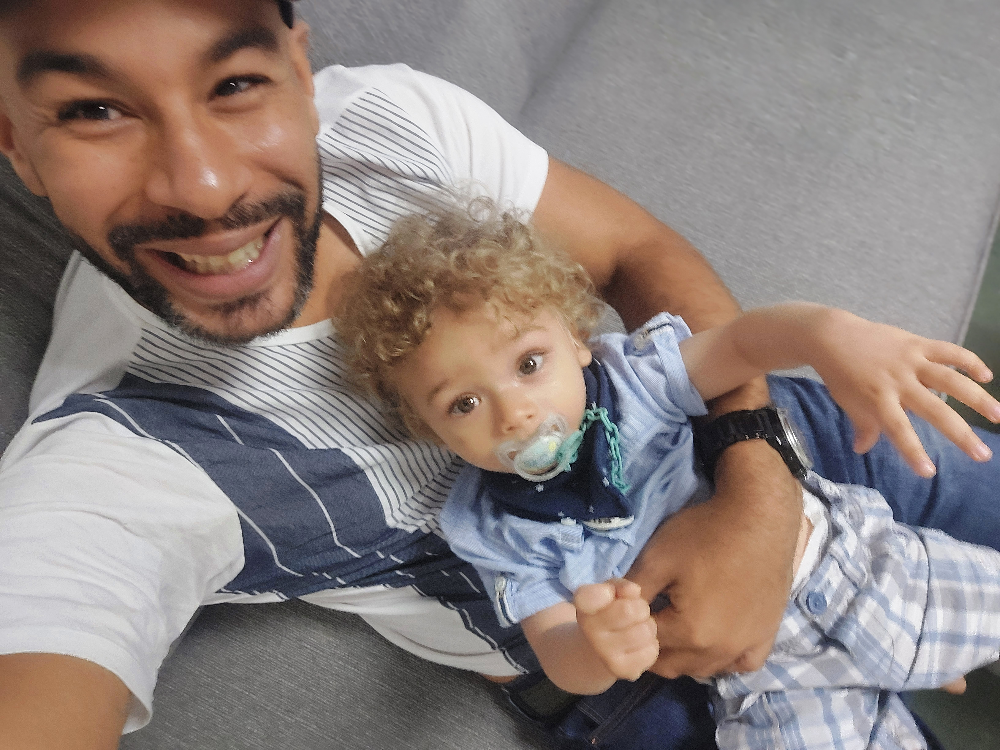

Bienvenido a Mi Blog
 Soy Duanly Vega Alderete, apasionado por la tecnología, el desarrollo web, y la escritura. Pero, lo más importante en mi vida es mi hijo, Thyrone Miguel, quien ilumina mis días y me inspira a seguir aprendiendo y creando. 🌟
🚀 En este blog, te invito a acompañarme en este viaje donde comparto proyectos, ideas, y todo lo que voy descubriendo en el fascinante mundo de la tecnología. ¡Espero que disfrutes tu estancia aquí! 😊
¿Qué puedes encontrar aquí?
- Sobre mí: Aprende más sobre quién soy y qué hago.
- Artículos: Lee sobre temas que me interesan, desde guías de programación hasta reflexiones sobre tecnología.
- Proyectos: Descubre los proyectos en los que estoy trabajando o que he completado recientemente.
- Recursos: Encuentra herramientas y recursos útiles que utilizo en mi día a día.
Últimos Artículos
Aquí puedes listar algunos de tus últimos artículos si los tienes:
Siéntete libre de explorar el contenido y de dejar tus comentarios o preguntas. ¡Espero que disfrutes tu estancia!
Síguenos en:
Facebook© Duanly Vega Alderete 2024